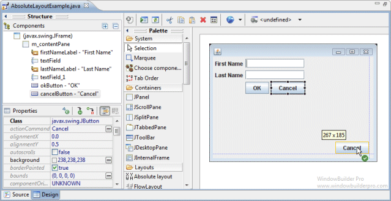
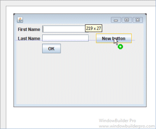
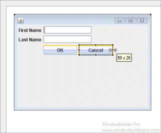
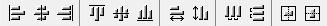
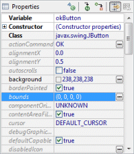

Main Features
- Select Absolute Layout from the Layouts palette and drop it on a JFrame or JPanel

- Graphical feedback is provided for all widget size and position operations


Graphical Feedback
- Position and size widgets using snapping feedback

- Provide position and size feedback via tooltips

- Align widgets horizontally and vertically

- Indent widgets intelligently

- Align widgets along text baselines
- Align widgets to margins

- Replicate widget heights and widths


- Align widgets using optional grid

- Align and center widgets using toolbar

- Set alignment and size using floating layout assistant
- Set size, location and/or bounds properties using the Property Pane
